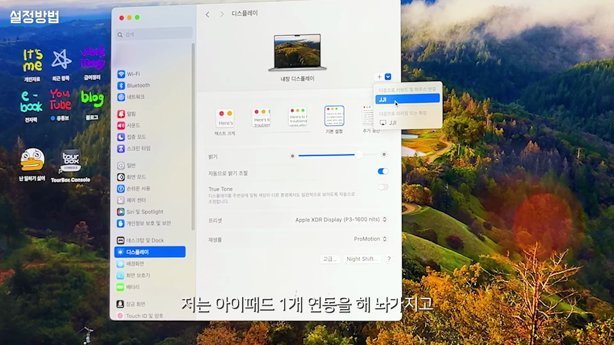
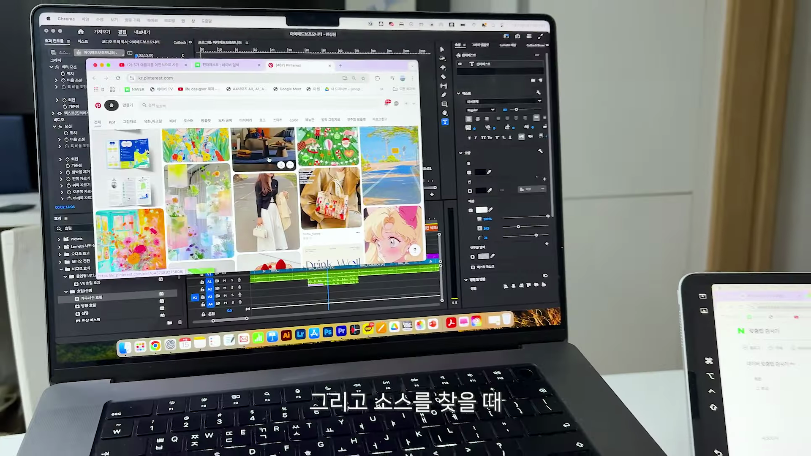

이번 포스팅에서는 아이패드 미니와 맥북을 연동하여 작업하는 방법과 그 효과를 살펴보겠습니다. 최근 댓글을 통해 아이패드와 맥북의 연동에 대한 관심이 커지고 있는 가운데, 실질적인 사용 사례와 설정 방법을 함께 공유하려 합니다.
아이패드 미니를 갖고 싶다는 열망
- 아이패드 미니 구매 욕구 강조
- 아이패드 관련 쇼츠도 제작한 경험
- 아이패드 사용자 많음
아이패드 미니에 대한 갈망과 함께 관련 콘텐츠 제작의 경험을 공유.
보조 모니터로서의 아이패드 활용
- 보조 모니터 사용에 대한 많은 의견
- 작업 시 유용한 보조 모니터로서의 가능성
- 댓글을 통해 아이템 재사용 고려
아이패드를 보조 모니터로 사용해본 경험과 그 유용성을 다시 한번 생각하게 되었다.
아이패드를 거치대와 함께 사용하기
- 아이패드 거치대 사용 리뷰
- 오랜만에 아이패드를 사용해봄
- 일상적인 사용 법
아직도 아이패드 거치대를 사용해 작업하는 것이 얼마나 유용한지를 깨닫게 되었다.

아이패드와 맥북 연동 설정
- 디스플레이 설정 방법 안내
- 아이패드 연결 및 설정 팁
- 마우스와 키보드 연결 방법
아이패드와 맥북의 디스플레이 설정 및 활성화 방법에 대해 구체적인 단계로 설명.
미러링 및 확장 기능 활용하기
- 모니터 자료를 아이패드에 쉽게 전송하는 법
- 확장 기능을 통해 작업 공간 넓히기
- 미러링과 듀얼 모니터 활용
미러링 및 여러 기능을 사용하여 작업 공간을 넓히고 생산성을 높이는 방법.
아이패드의 장점과 작업 시의 단점
- 아이패드로 작업할 때의 어려움
- 맥북과 비교한 아이패드의 장단점
- 각 기기의 특성을 잘 이해할 필요
아이패드를 사용하며 느낀 장점과 단점을 공유하며 각 기기에 맞는 효율적인 사용법 모색.

아이패드를 이용한 프리미어 편집 방법
- 작업물 다운 받기 및 관리 방법
- 소스를 찾으며 편집하는 과정
- 자료 복사를 통한 생산성 향상
아이패드를 활용해 프리미어 편집할 때 유용한 방법들과 작업 방식에 대한 공유.
아이패드와 맥북의 최적 활용법
- 각 기기의 활용도를 높이는 방법
- 유니버셜과 사이드카 기능 비교
- 필요에 맞는 기능 사용 추천
아이패드를 활용할 때, 어떤 기능을 선택해야 더 유용한지에 대한 팁 제공.
Tags: #아이패드 #맥북 #연동 #보조 모니터 #미러링 #확장 기능 #프리미어 #생산성